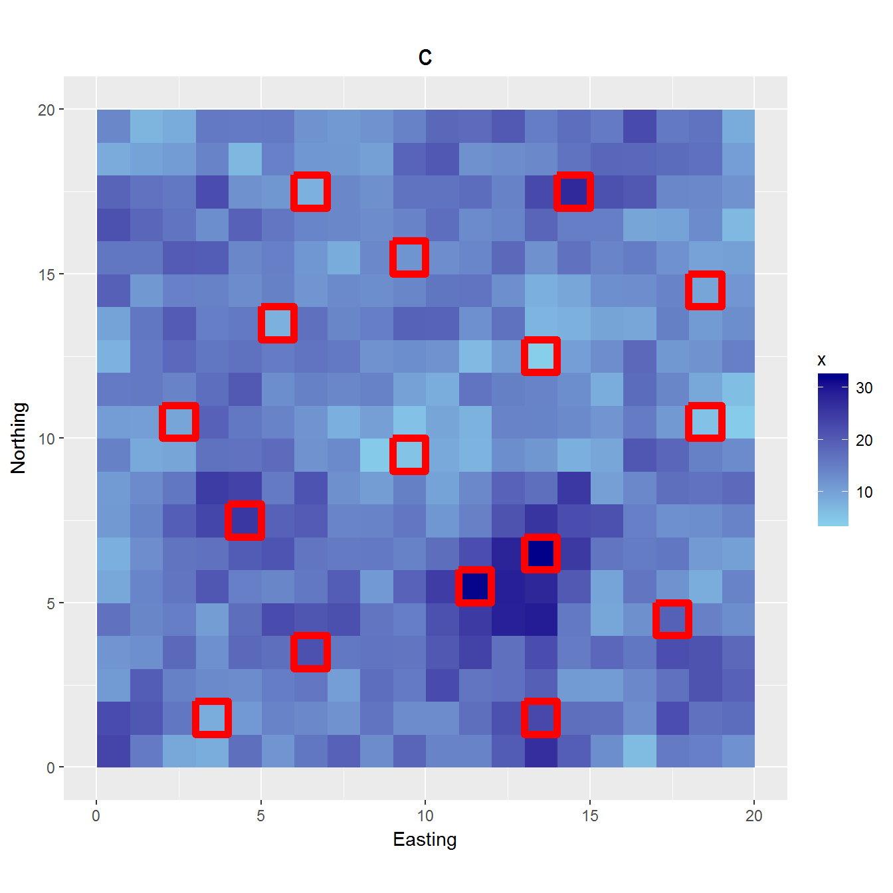
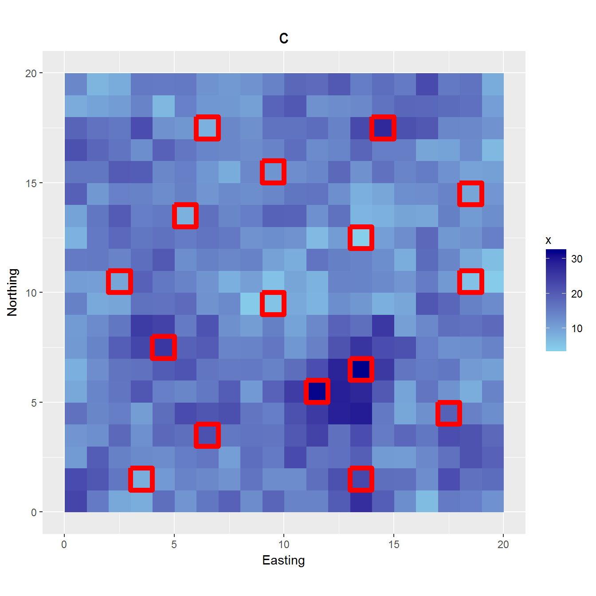

Chapter 11 Sampling for mapping
This second part of the book deals with sampling for mapping. In practice a map is constructed by overlaying the study area by a very fine square grid, and estimating the variable of interest for all grid cells. Note that the estimated value may either represent the mean of the grid cell or the value at its centre. We should be clear about this.
For mapping a model-based sampling approach is the only option. We cannot afford to select a random sample from each grid cell for design-based estimation of their means. A statistical model, containing an error term modeled by a probability distribution, is used to map the study variable from the sample data. As the model already contains a random error, selection of the sampling units by probability sampling is not strictly needed in a model-based approach. As a consequence there is room for optimizing the sampling units, i.e. searching for those units that lead to the most precise map.
As an illustration, consider the following model: \[\begin{equation} z_i = \beta_0 + \beta_1 x_i + \epsilon_i \;, \tag{11.1} \end{equation}\]with \(z_i\) the study variable of unit \(i\), \(\beta_0\) and \(\beta_1\) regression coefficients and \(\epsilon_i\) the error (residual) at unit \(i\), normally distributed with mean zero and a constant variance \(\sigma^2\). The errors are assumed independent, so that \(Cov(\epsilon_i,\epsilon_j)=0\) for all \(i \neq j\). Figure 11.1 shows a simple random sample without replacement (subfigure a) and the sample optimized for mapping with a simple linear regression model (subfigure b). Both samples are plotted in a map of the covariate (predictor).

 

Figure 11.1: Simple random sample (a), optimized samples for mapping with simple linear regression (b) and kriging with an external drift (c), and stratified sample using sixteen equal-sized covariate strata (d)
The optimized sample for mapping with a simple linear regression model contains the units with the smallest or the largest values of the covariate \(x\). The optimized sample shows strong spatial clustering. Spatial clustering is not avoided because in a simple linear regression model we assume that the data are independent. The standard errors of both regression coefficients are considerably smaller for the optimized sample (Table 11.1). The joint uncertainty about the two regression coefficients, quantified by the determinant of the variance-covariance matrix of the estimated regression coefficients, equals 0.0020 for the simple random sample and 0.00010 for the optimized sample. When we are less uncertain about the regression coefficients, we are also less uncertain about the estimates of the study variable obtained with the simple linear regression model at (unobserved) locations of a fine grid discretizing the study area used for mapping the study variable. So, we conclude that for mapping with a simple linear gression model, simple random sampling is not a good option.
| Sampling design | se intercept | se slope | Determinant |
|---|---|---|---|
| SI | 1.51 | 0.086 | 2e-03 |
| Optimized | 1.08 | 0.051 | 1e-04 |
In this model the errors are not independent, but spatially correlated. This model is used when mapping by kriging with an external drift (KED). Figure 11.1(c) shows an optmized sample for KED mapping4. Spatial clustering is avoided, the selected units are spread throughout the area. At the same time units near the minimum (unit with coordinates (13.5, 12.5)) and maximum (unit with coordinates (13.5, 6.5)) of the covariate are selected. This example shows that there is no single best sampling design for mapping. The best design depends on the method used for mapping. If we believe that the study variable can better be mapped by KED instead of simple linear regression, because we expect the data to be spatially autocorrelated, the optimal sample largely differs from the optimal sample for mapping using a simple linear regression model.
If we foresee a quadratic relation, \(z_i = \beta_0 + \beta_1x_i + \beta_2x^2_i+\epsilon_i\), the optimal sample will also include locations with covariate values near the mean of \(x\). And if we expect an even more complicated, non-linear relation, it can be advantageous to select a sample so that the relative frequency distribution of \(x\) in the sample and in the population are similar. This can be done by using the covariate \(x\) to construct as many strata as the number of sampling unts we want to select. By using evenly spaced quantiles of \(x\) as stratum breaks, the strata have equal size. From each stratum one unit is selected (Figure 11.1(d)). This is the rationale of conditioned Latin hypercube sampling in case we have multiple covariates (Chapter 15).
11.1 Geometric versus model-based sampling designs
At the highest level we may distinguish geometric from model-based sampling designs for mapping. A square grid and a triangular grid are examples of geometric sampling designs; the sampling locations show a regular, geometric spatial pattern. In other geometric sampling designs the spatial pattern is not that nicely regular. Yet these are classified as geometric sampling designs when the samples are obtained by minimizing a geometric criterion, i.e. a criterion defined in terms of distances between the sampling locations and the nodes of a fine prediction grid discretizing the study area (Chapters 13 and 14).
In model-based sampling designs the samples are obtained by minimizing a criterion that is defined in terms of variances of prediction errors. An example is the mean kriging variance criterion, i.e. the average of the kriging variances over all nodes of the prediction grid. Model-based sampling therefore requires some knowledge of the model of spatial variation. Such a model must be postulated, and given this model the sample can be optimized.
In Chapter 1 we introduced the design-based and model-based approach for sampling and statistical inference. Note that a model-based approach does not necessarily imply model-based sampling. The adjective model-based refers to the model-based inference, not to the selection of the locations. In a model-based approach sampling locations can be, but need not be selected by model-based sampling. If they are, then both in selecting the locations and in mapping a statistical model is used. In most cases the two models differ: once the sample data are collected, these are used to update the postulated model used for sampling design. This updated model is then used for mapping.